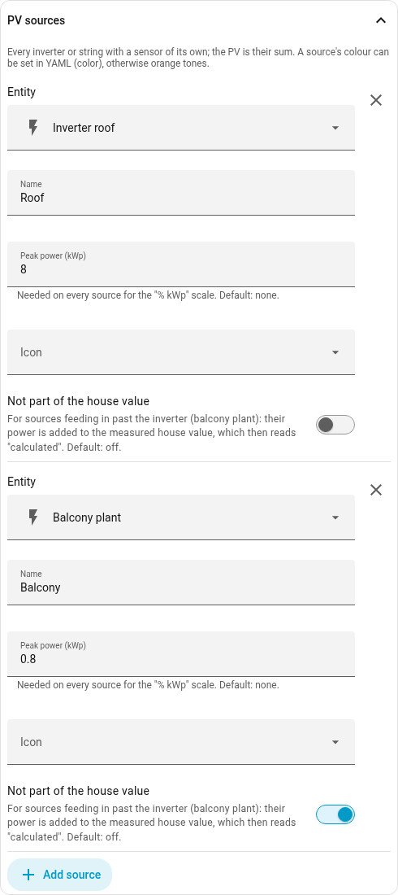
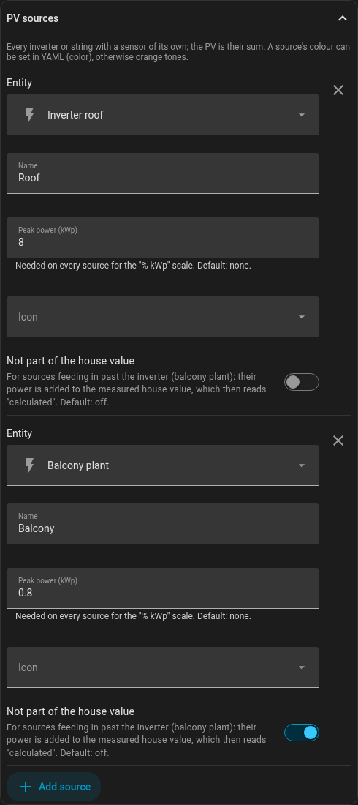
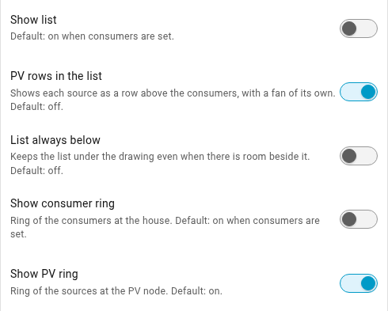
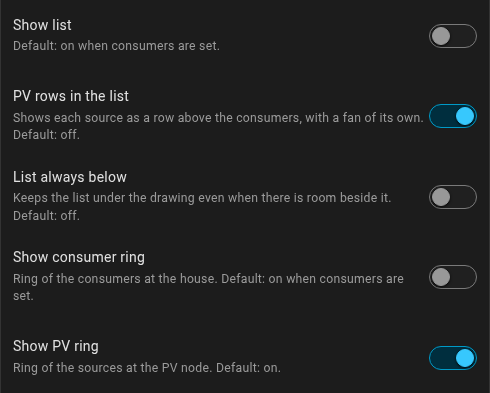

Balcony solar and more PV
Many installations have more than one PV source: the roof array on the hybrid inverter plus a balcony plant or further micro-inverters. The card takes each source on its own: the PV node shows their sum, the ring shows each source’s share, and each one can have its own row in the list.
Adding several sources
In the editor, under Main entities, choose Several sources (one per inverter) for PV. The section PV sources appears below it: for each source the power entity, a name, the peak power in kWp and an icon. Add source adds the next one.

No sum entity is needed. At night micro-inverters often report as unavailable; the card counts a source whose last value was close to zero as 0, silently. If a source drops out while it was producing, the sum turns amber and its tooltip names what is missing ("without balcony").
Balcony plant: not part of the house value
A hybrid inverter only sees its own strings. A balcony plant feeding in behind the meter shows up in its house value as less consumption, not as production – the house value is too small by exactly its power.
For this each source has the switch Not part of the house value. The card adds that source’s power to the measured house value, and the house then reads "· calculated". A tap on the house still opens the history of the measured sensor.
grid needs no correction as long as the grid sensor measures at the service
connection, as a smart meter or the inverter’s current transformer does. It
sees the balcony plant’s feed-in anyway.
Ring and rows
Under Display there are two switches for the sources: Show PV ring (default: on) and PV rows in the list (default: off). The PV rows stand above the consumers, sort like them and have their own fan to the PV node.


With the peak power entered for every source, the card offers one more button: 100% shows the shares on the ring, % kWp the power relative to the total peak power – see Quick buttons.
In YAML
entities:
solar:
- entity: sensor.inverter_roof
name: Roof
kwp: 8
- entity: sensor.balcony_plant
name: Balcony
kwp: 0.8
house: excluded
grid: sensor.grid
house: sensor.house_consumption
list:
solar: trueAll fields of a source are listed under All options.
Still possible: a sum helper
If you need the sum elsewhere too, you can create a helper as before (Group → Sensor group, type Sum, Ignore non-numeric on) and enter it as one entity. Ring shares, PV rows and the kWp scale are not available then – the card does not know the individual sources. For the energy mode the group, too, needs the state class "Measurement"; it takes it from its members when they all have the same (see Energy).